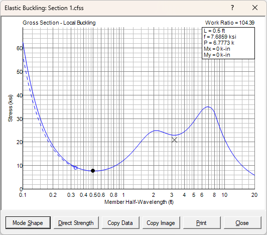
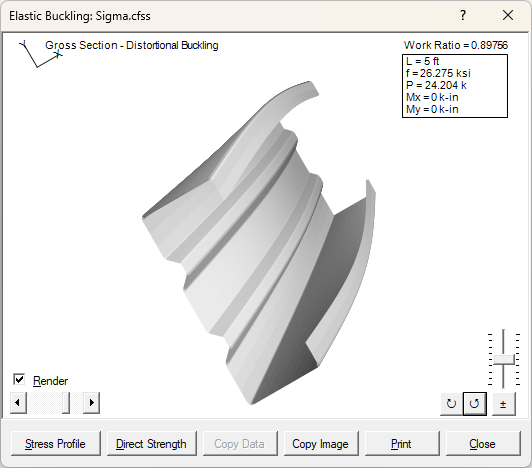
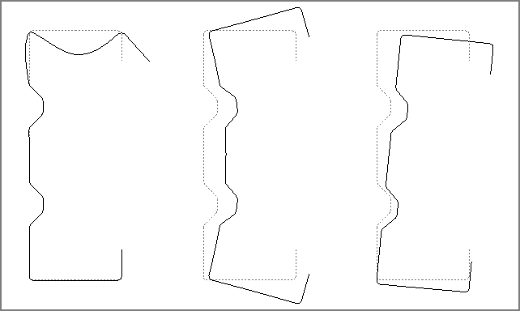
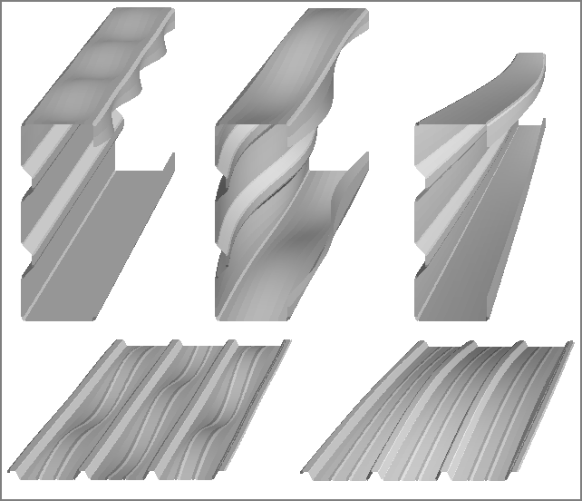

The Elastic Buckling window is displayed when you choose Elastic Buckling from the Compute menu, define the parameters to use in the analysis, and then perform the analysis.
The elastic buckling analysis uses the finite strip method to determine the magnitude of the forces at which elastic buckling occurs. This analysis involves dividing the section into several flat strips throughout the flat and curved portions of the section. The number of strips is automatically determined by CFS based on the size of the element and the stress distribution. More strips are used for larger elements with stress gradients. Fewer strips are used for smaller elements with uniform stress.

This window shows a plot of buckling stress vs. member length. The member length is shown on a horizontal logarithmic scale to provide greater resolution for the short wave-length behavior. The stress magnitude represents the maximum stress in the cross section, which is generally the maximum compressive stress, but may be the maximum tensile stress if bending about a non-symmetric axis. The solid curve represents the stress for buckling of the gross section. If the section contains holes, the dashed curve reflects the gross section stress for local buckling of the net section, and the X point reflects the gross section stress for distortional buckling of the net section.
The magnitude of the stress and resulting forces is displayed in the upper right corner corresponding to the position of the dot on the plotted profile. You can move the dot to other locations on the profile to display the corresponding values by pressing the left and right arrow keys or clicking on the profile.
The Copy Data button copies the profile data to the clipboard. This data can be pasted into another application such as Notepad, Word, or Excel.
The Copy Image button will copy the current display image to the clipboard, which may then be pasted into another application. This button may be used with either the stress profile or the mode shapes as shown below.
The Mode Shape button displays the buckled shape for the currently selected location on the stress profile. Subsequently pressing the Stress Profile button will return to the stress vs. length profile as shown above.

The Render option provides an illustration of the buckled shape. This illustration may be scaled up or down with the slider bar on the right (or up/down arrows). The direction of the deflection may be reversed with the ± button (or +/- keys). The member may be rotated left or right using the rotation buttons (or page-up/page-down). And you may shift to other mode shapes by moving the scroll bar on the left (or left/right arrows).
With the Render option turned off, you can see the mode shape in cross-section view:

These examples illustrate local buckling, distortional buckling, and lateral-torsional buckling. When this occurs at a local minima on the stress profile, the load ratio (P/Py) can be automatically applied to the Direct Strength value for the section by clicking the Direct Strength button. You just need to select whether it’s a local or distortional buckling mode and click OK. To fill in additional direct strength values for the section, run the elastic buckling analysis for the other basic stress distributions (positive and negative bending about x and y axes).
Here are some additional renderings of buckled shapes:

The Print button will print the elastic buckling results. It contains the stress profile and each controlling mode shape. This printout is formatted for standard 8½x11 inch paper in portrait orientation. Other sizes and orientations should work, but may result in less effective use of the paper.